arasaac 27568
arasaac 28187
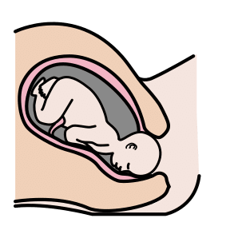
arasaac 32019
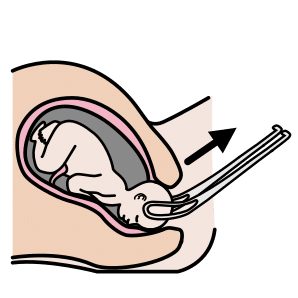
arasaac 32021
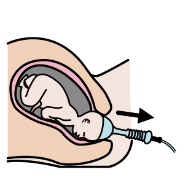
arasaac 32022
arasaac 32027
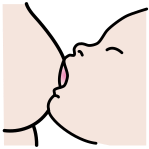
arasaac 32028
arasaac 32030
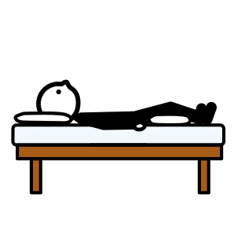
arasaac 32832
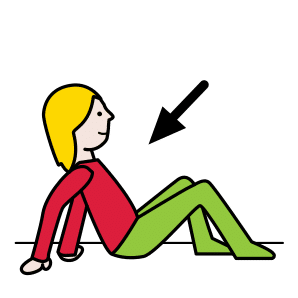
arasaac 29660
arasaac 2275
arasaac 24896
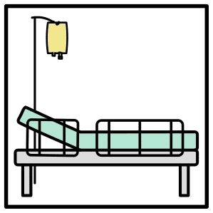
arasaac 35325
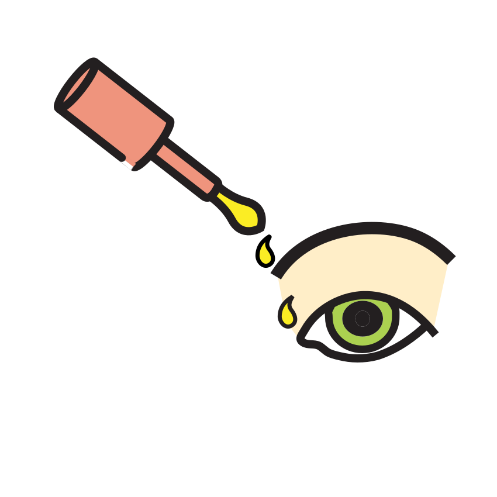
mulberry eye_drops
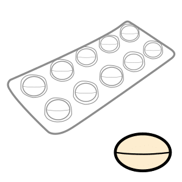
arasaac 34565
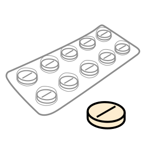
arasaac 39792
openmoji 1F48A
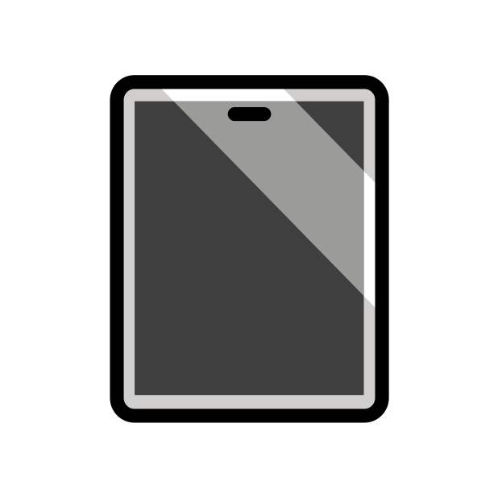
openmoji E1CC
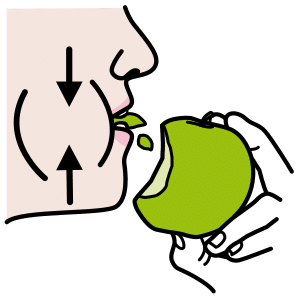
arasaac 32654
arasaac 38558
arasaac 39075
mulberry chew_,_to
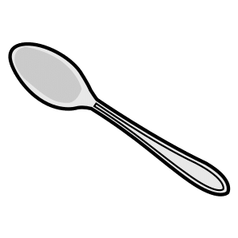
arasaac 2362
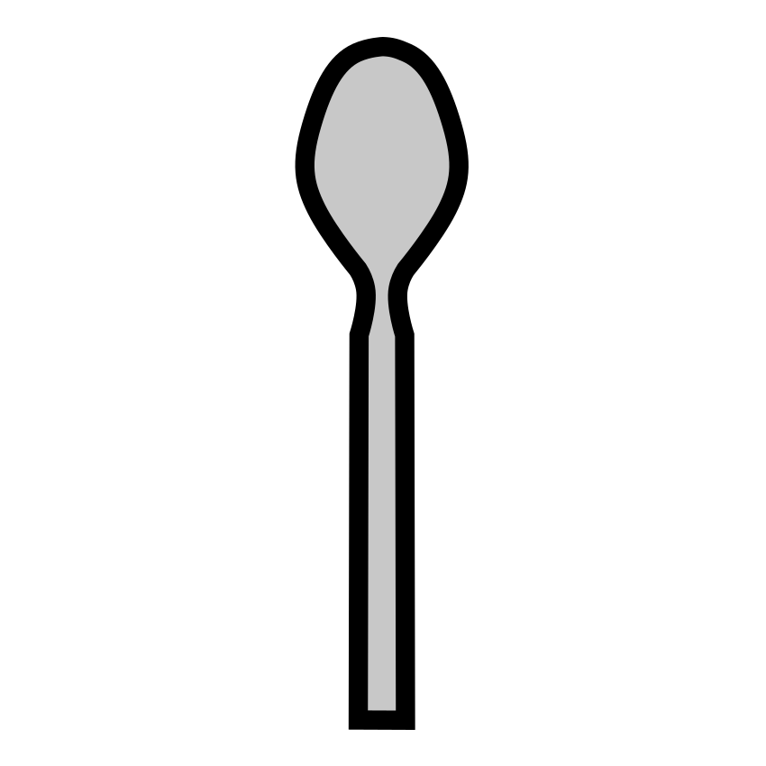
mulberry spoon
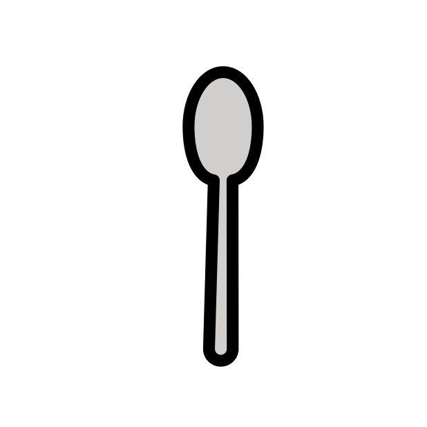
openmoji 1F944
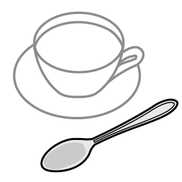
arasaac 37179
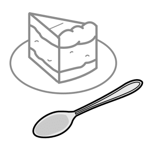
arasaac 37180
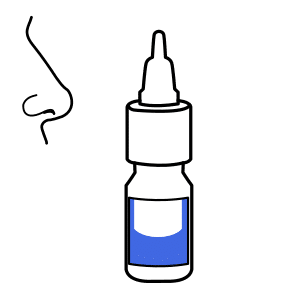
arasaac 26571
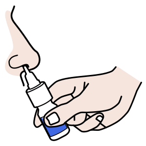
arasaac 30707
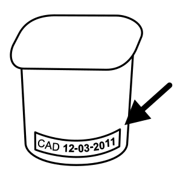
arasaac 15503
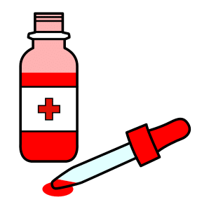
arasaac 26212
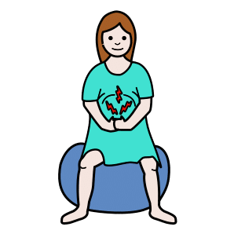
arasaac 32222

arasaac 3272
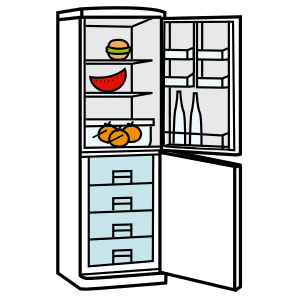
arasaac 4876
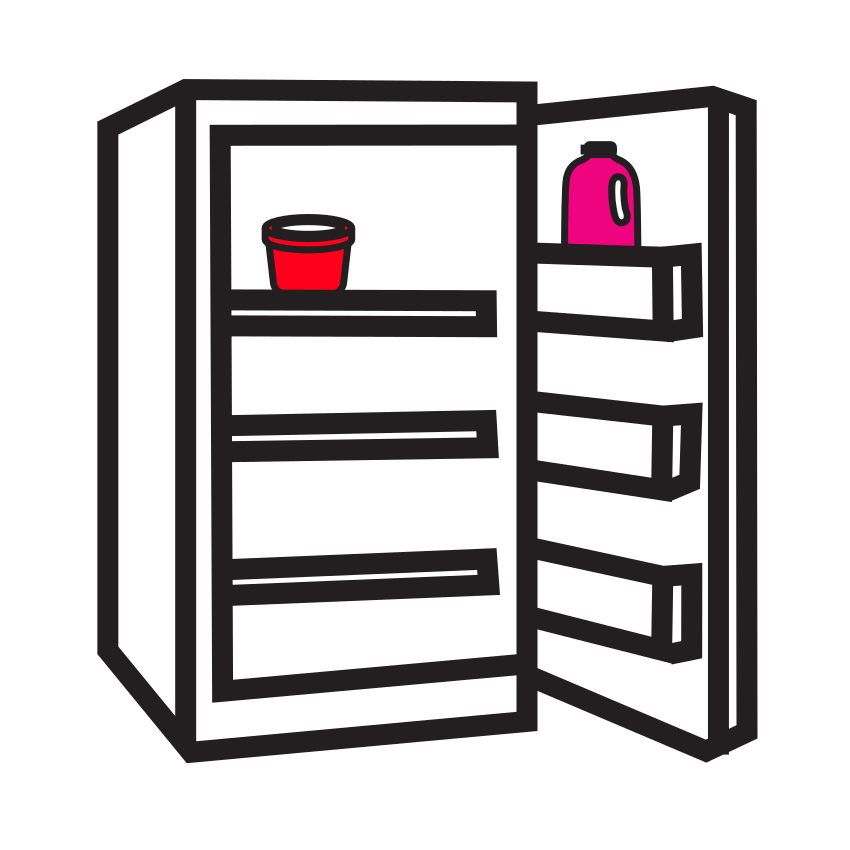
mulberry fridge
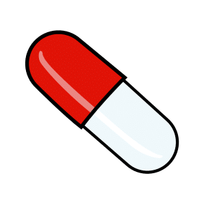
arasaac 3006
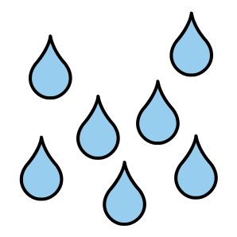
arasaac 25137
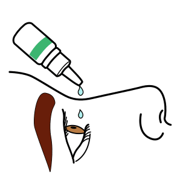
arasaac 26757
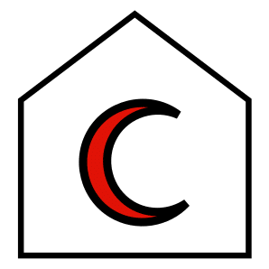
arasaac 36205
arasaac 36210
arasaac 35307
arasaac 6050
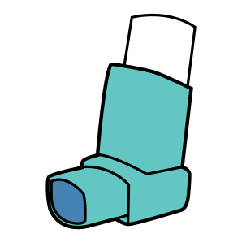
arasaac 6017
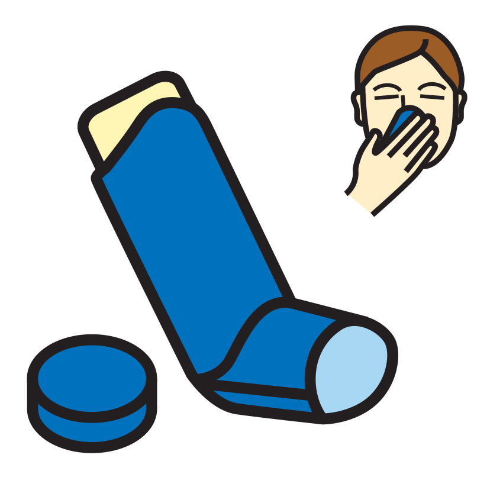
mulberry inhaler
arasaac 33928
arasaac 30737
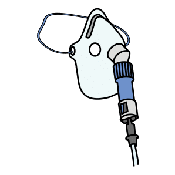
arasaac 30740
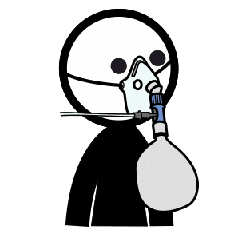
arasaac 30748
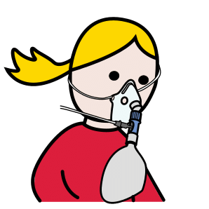
arasaac 30749
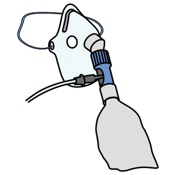
arasaac 30750
arasaac 30751
arasaac 30752
arasaac 30753
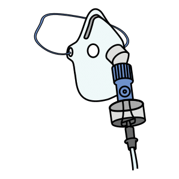
arasaac 30754
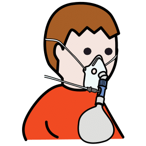
arasaac 30771
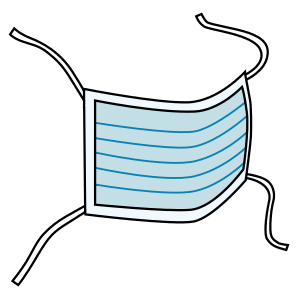
arasaac 36791
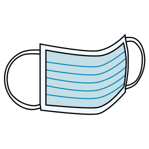
arasaac 36793
arasaac 6561
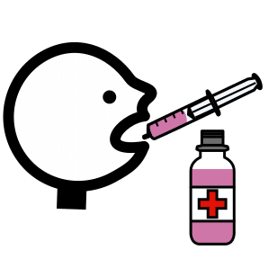
arasaac 30116
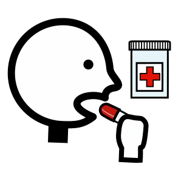
arasaac 30117
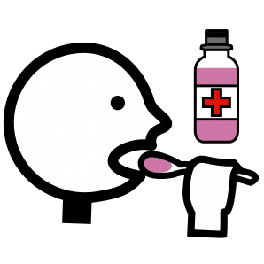
arasaac 30118
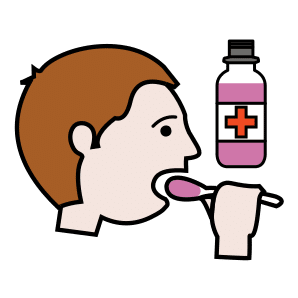
arasaac 30119
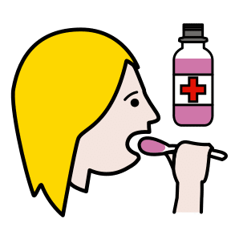
arasaac 30120
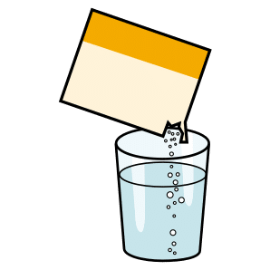
arasaac 8359
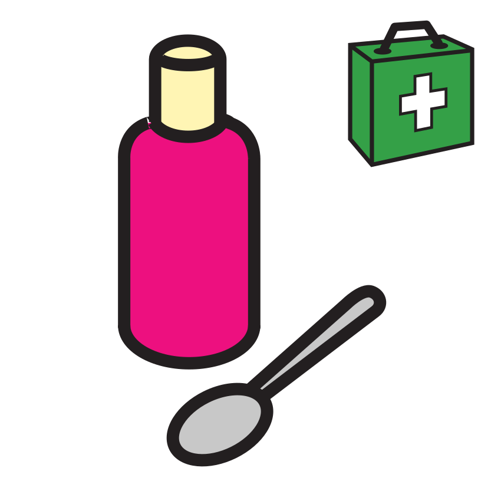
mulberry medicine
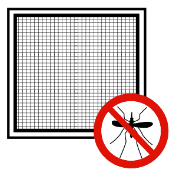
arasaac 38507
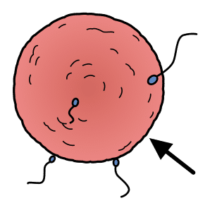
arasaac 14999
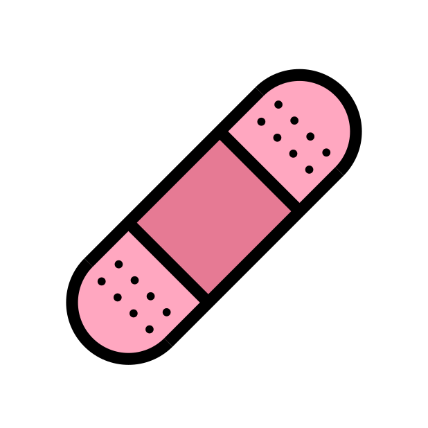
openmoji 1FA79
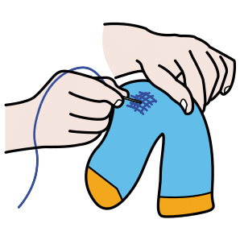
arasaac 15473
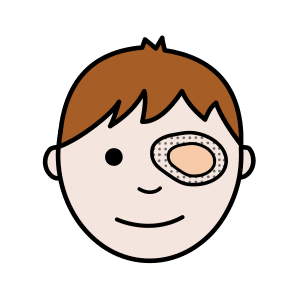
arasaac 30709
arasaac 30710
arasaac 30711
arasaac 30712
arasaac 37611
arasaac 7786
arasaac 27957
arasaac 31827
arasaac 3313
arasaac 36835
arasaac 36836
arasaac 36837
arasaac 36838
arasaac 37368
arasaac 38352
arasaac 6497
arasaac 32204
arasaac 3376
arasaac 35637
arasaac 4873
mulberry cream
mulberry cream_2
arasaac 31712
arasaac 31959
arasaac 32168
arasaac 29092
arasaac 30146
arasaac 30147
arasaac 33906
openmoji 1FA78
arasaac 2962
arasaac 7205
arasaac 15810
arasaac 15812
arasaac 15814
arasaac 27475
arasaac 27559
arasaac 27561
arasaac 33935
arasaac 8163
arasaac 32264
arasaac 30703
arasaac 31714
arasaac 32057
arasaac 7293
arasaac 36504
arasaac 10322
arasaac 11220
arasaac 11320
arasaac 11392
arasaac 15489
arasaac 15491
arasaac 15533
arasaac 15736
arasaac 15832
arasaac 15834
arasaac 15836
arasaac 16117
arasaac 16131
arasaac 16137
arasaac 16141
arasaac 16149
arasaac 16151
arasaac 16365
arasaac 16367
arasaac 17249
arasaac 24125
arasaac 24146
arasaac 24529
arasaac 24530
arasaac 24531
arasaac 24535
arasaac 24543
arasaac 24591
arasaac 24609
arasaac 24610
arasaac 24895
arasaac 24929
arasaac 24930
arasaac 25698
arasaac 25863
arasaac 26053
arasaac 26366
arasaac 2751
arasaac 27663
arasaac 2780
arasaac 27817
arasaac 27840
arasaac 27841
arasaac 27842
arasaac 27877
arasaac 2789
arasaac 27934
arasaac 28049
arasaac 28073
arasaac 28074
arasaac 28123
arasaac 28127
arasaac 28255
arasaac 28256
arasaac 28269
arasaac 28411
arasaac 28511
arasaac 2855
arasaac 28587
arasaac 28588
arasaac 28589
arasaac 28593
arasaac 28594
arasaac 28595
arasaac 2877
arasaac 29018
arasaac 29169
arasaac 29736
arasaac 29756
arasaac 29757
arasaac 29758
arasaac 29812
arasaac 29816
arasaac 29828
arasaac 29857
arasaac 29867
arasaac 29875
arasaac 29903
arasaac 29967
arasaac 30134
arasaac 30142
arasaac 30181
arasaac 30182
arasaac 30186
arasaac 30188
arasaac 30190
arasaac 30192
arasaac 30460
arasaac 30464
arasaac 30466
arasaac 30468
arasaac 30470
arasaac 30474
arasaac 30475
arasaac 30476
arasaac 30664
arasaac 30666
arasaac 30670
arasaac 30671
arasaac 30686
arasaac 30687
arasaac 30694
arasaac 30729
arasaac 30735
arasaac 30747
arasaac 30765
arasaac 30767
arasaac 30772
arasaac 30774
arasaac 30790
arasaac 30807
arasaac 31306
arasaac 31316
arasaac 31317
arasaac 31318
arasaac 31328
arasaac 31346
arasaac 31348
arasaac 31350
arasaac 31352
arasaac 31358
arasaac 31690
arasaac 31692
arasaac 31698
arasaac 31700
arasaac 31724
arasaac 31728
arasaac 31775
arasaac 31829
arasaac 31869
arasaac 31873
arasaac 31874
arasaac 31877
arasaac 31908
arasaac 31911
arasaac 31947
arasaac 31961
arasaac 31963
arasaac 31965
arasaac 31967
arasaac 31969
arasaac 31979
arasaac 31989
arasaac 32011
arasaac 32029
arasaac 32049
arasaac 32076
arasaac 32082
arasaac 32084
arasaac 32085
arasaac 32099
arasaac 32107
arasaac 32109
arasaac 32186
arasaac 32187
arasaac 32198
arasaac 32218
arasaac 32224
arasaac 32232
arasaac 32236
arasaac 32238
arasaac 32240
arasaac 32242
arasaac 32248
arasaac 32266
arasaac 32267
arasaac 32282
arasaac 32286
arasaac 32288
arasaac 32492
arasaac 32714
arasaac 32834
arasaac 32836
arasaac 32838
arasaac 32902
arasaac 32982
arasaac 33104
arasaac 33105
arasaac 33116
arasaac 33118
arasaac 3312
arasaac 33120
arasaac 33130
arasaac 33132
arasaac 33133
arasaac 33134
arasaac 33135
arasaac 33136
arasaac 33137
arasaac 33138
arasaac 33139
arasaac 33150
arasaac 3330
arasaac 3357
arasaac 33904
arasaac 33924
arasaac 33930
arasaac 33931
arasaac 34025
arasaac 3404
arasaac 34094
arasaac 34125
arasaac 34274
arasaac 34337
arasaac 34381
arasaac 34609
arasaac 34653
arasaac 34717
arasaac 34727
arasaac 34729
arasaac 34731
arasaac 35121
arasaac 35171
arasaac 35173
arasaac 35191
arasaac 35213
arasaac 35217
arasaac 35219
arasaac 35221
arasaac 35223
arasaac 35225
arasaac 35289
arasaac 35291
arasaac 35303
arasaac 35313
arasaac 35315
arasaac 35321
arasaac 35323
arasaac 35331
arasaac 35333
arasaac 35335
arasaac 35337
arasaac 35343
arasaac 35527
arasaac 35607
arasaac 35613
arasaac 35803
arasaac 35804
arasaac 35847
arasaac 35848
arasaac 35961
arasaac 36337
arasaac 36339
arasaac 36343
arasaac 36392
arasaac 36568
arasaac 36578
arasaac 36683
arasaac 36686
arasaac 36708
arasaac 36709
arasaac 36710
arasaac 36714
arasaac 36729
arasaac 36730
arasaac 36787
arasaac 36789
arasaac 36833
arasaac 36834
arasaac 36855
arasaac 36856
arasaac 36857
arasaac 36858
arasaac 36861
arasaac 36862
arasaac 36886
arasaac 36887
arasaac 36890
arasaac 36892
arasaac 37221
arasaac 37309
arasaac 37311
arasaac 37341
arasaac 37376
arasaac 37377
arasaac 37378
arasaac 37379
arasaac 37380
arasaac 37383
arasaac 37388
arasaac 37390
arasaac 37391
arasaac 37392
arasaac 37393
arasaac 37394
arasaac 37395
arasaac 37396
arasaac 37397
arasaac 37398
arasaac 37400
arasaac 37461
arasaac 37489
arasaac 37490
arasaac 37540
arasaac 37607
arasaac 37610
arasaac 37613
arasaac 37614
arasaac 37615
arasaac 37616
arasaac 37625
arasaac 37626
arasaac 37629
arasaac 37630
arasaac 37631
arasaac 37632
arasaac 37635
arasaac 37679
arasaac 37715
arasaac 37812
arasaac 37813
arasaac 37904
arasaac 37955
arasaac 37957
arasaac 37980
arasaac 37981
arasaac 38016
arasaac 38059
arasaac 38060
arasaac 38061
arasaac 38062
arasaac 38065
arasaac 38066
arasaac 38067
arasaac 38068
arasaac 38119
arasaac 38204
arasaac 38264
arasaac 38328
arasaac 38329
arasaac 38349
arasaac 38356
arasaac 38369
arasaac 38391
arasaac 38392
arasaac 38393
arasaac 38419
arasaac 38472
arasaac 38476
arasaac 38552
arasaac 38623
arasaac 38668
arasaac 38687
arasaac 38688
arasaac 38722
arasaac 38724
arasaac 38725
arasaac 38749
arasaac 38756
arasaac 38757
arasaac 38771
arasaac 38772
arasaac 38819
arasaac 38826
arasaac 38835
arasaac 38841
arasaac 38848
arasaac 38850
arasaac 38859
arasaac 38860
arasaac 38861
arasaac 38867
arasaac 38873
arasaac 38878
arasaac 38892
arasaac 38905
arasaac 38906
arasaac 38911
arasaac 38918
arasaac 38928
arasaac 38933
arasaac 38975
arasaac 38992
arasaac 39050
arasaac 39055
arasaac 39084
arasaac 39113
arasaac 39196
arasaac 39226
arasaac 39227
arasaac 39240
arasaac 39280
arasaac 39281
arasaac 39283
arasaac 39284
arasaac 39392
arasaac 39416
arasaac 39509
arasaac 39544
arasaac 39560
arasaac 39645
arasaac 39802
arasaac 39826
arasaac 39869
arasaac 39872
arasaac 39889
arasaac 39890
arasaac 39910
arasaac 39914
arasaac 39925
arasaac 39944
arasaac 39945
arasaac 39946
arasaac 4594
arasaac 4595
arasaac 4692
arasaac 4722
arasaac 4728
arasaac 5101
arasaac 5466
arasaac 5927
arasaac 5930
arasaac 5980
arasaac 6178
arasaac 6220
arasaac 6243
arasaac 6575
arasaac 6896
arasaac 7164
arasaac 8076
arasaac 8176
arasaac 8255
arasaac 8294
arasaac 8342
arasaac 8547
arasaac 9168
arasaac 9170
arasaac 9918
mulberry caterpillar
mulberry cream_ointment
mulberry cup_non_spill
mulberry medicine_cabinet
mulberry spill_,_to
mulberry tablet_blister_pack
mulberry tablets
openmoji E2CB
openmoji E305
openmoji E307